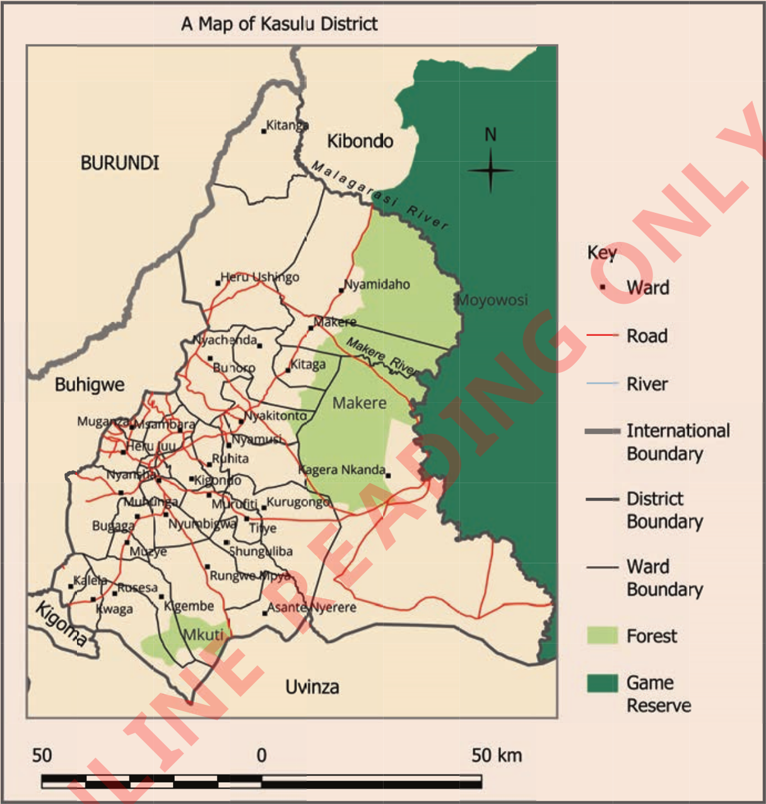

Activity 8
Study Figure 26, then answer the following questions:

Questions
1. Which districts border Kasulu District to the (a) West, (b) Northeast, (c) Southwest and (d) South?
2. What does Makere forest border on the eastern side?
3. Identify the boundary that separates the Moyowosi game reserve from Makere forest.
4. What does Kitaga ward border on the eastern side?
5. What does Kwaga ward border on the Southeast side?